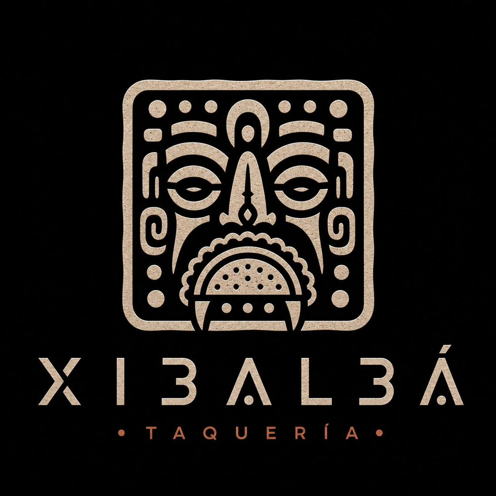
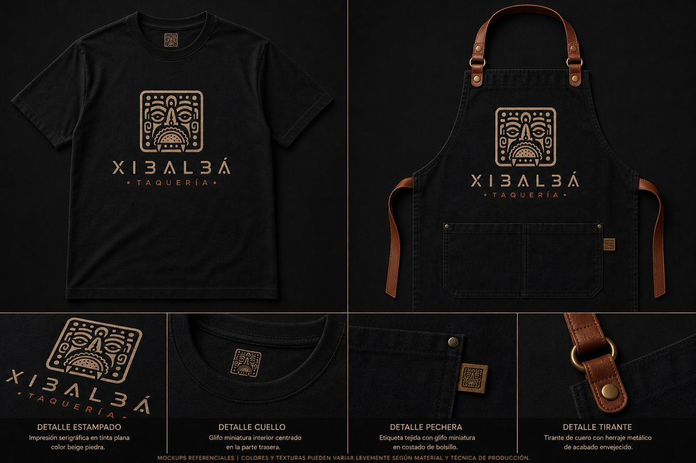
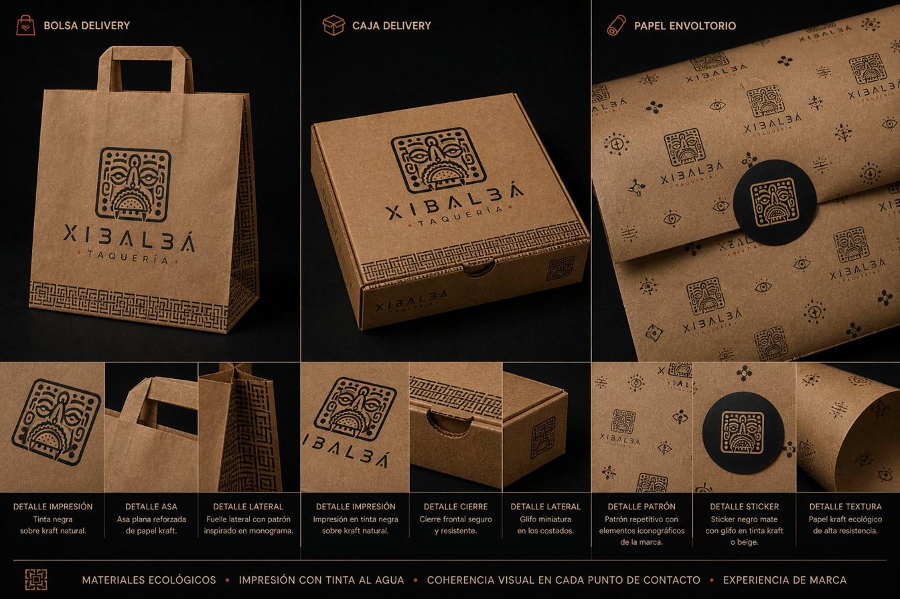
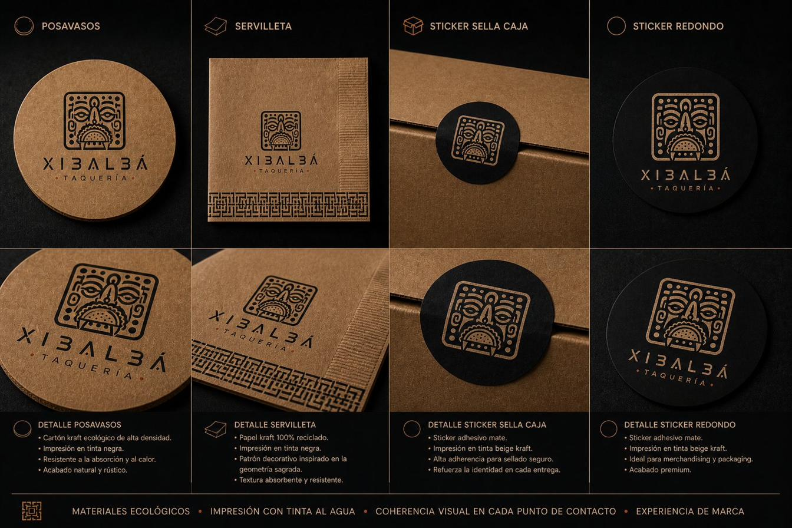
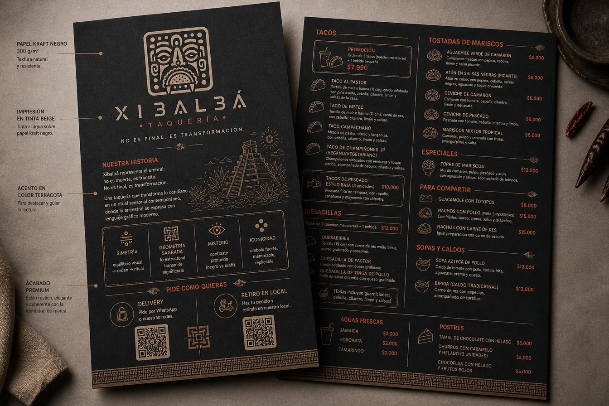

No es muerte, es tránsito. No es final, es transformación. Una taquería que transforma lo cotidiano en un ritual sensorial contemporáneo, donde lo ancestral se expresa con lenguaje gráfico moderno.
Glifo inspirado en máscaras mayas. Representa rostro → identidad, portal → tránsito, símbolo → cultura. Un ícono con peso visual fuerte, replicable a cualquier escala — desde un favicon hasta un sello de cera.

Versión principal · compacta · ícono · monograma · favicon
Una paleta reducida y precisa: el negro del misterio, el kraft del origen natural, la terracota suave del fuego, y el beige como neutralizador. Cada color tiene función — ninguno decora.
Polera y pechera: impresión serigráfica en tinta beige piedra sobre algodón negro. Glifo miniatura en cuello, etiqueta tejida en pechera, herrajes envejecidos. Discreto, ritual, premium.

Bolsa, caja, papel envoltorio en kraft natural con tinta negra. Patrón repetitivo con elementos iconográficos. Sticker negro mate con glifo en kraft. Tinta al agua, papel ecológico.

Posavasos kraft con glifo en tinta negra. Servilletas con patrón de geometría sagrada. Stickers redondos negro mate con glifo en kraft. Cada superficie, una repetición intencional.

Carta sobre papel kraft negro 300 g/m² con impresión en tinta beige y acentos en terracota. Acabado mate premium, estilo rústico y elegante coherente con la identidad.

No es decoración. Es estructura.
Es símbolo. Es experiencia.